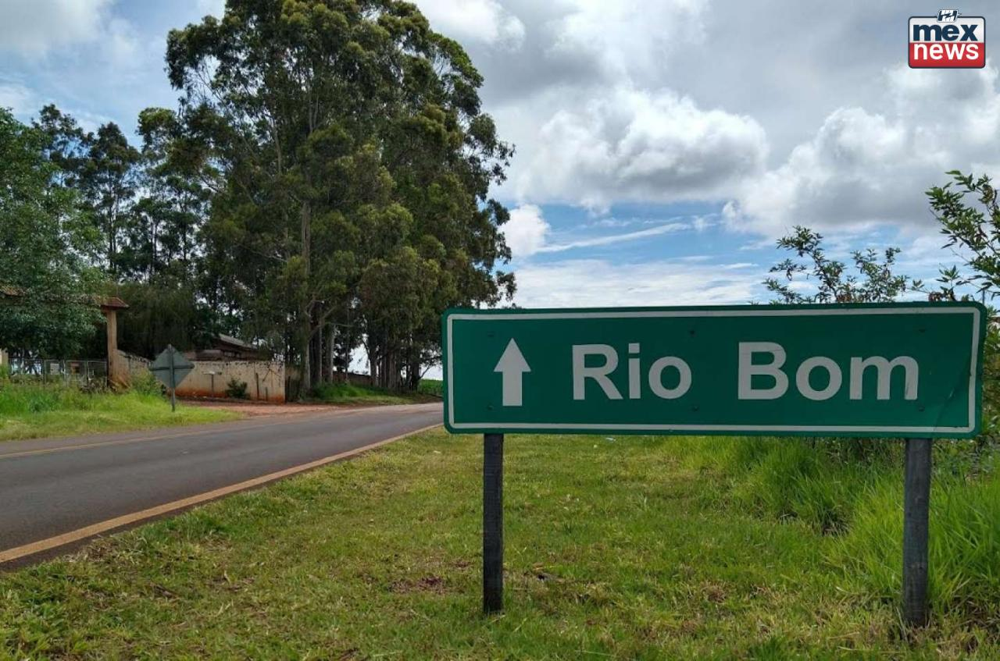

Sobre Rio Bom

Rio Bom é uma pequena cidade localizada no norte do Paraná, com pouco mais de 3 mil habitantes. Reconhecida por suas paisagens naturais e pela forte presença da agricultura familiar, o município é um exemplo de como o Brasil rural continua sendo a base de sustentação econômica e social.
A cidade valoriza suas raízes e tradições, mas também busca inovação para manter os jovens no campo, criando oportunidades de desenvolvimento sustentável e tecnológico.
Importância da Conexão Campo-Cidade
A integração entre o campo e a cidade é fundamental para garantir o abastecimento de alimentos, a geração de empregos e a qualidade de vida de toda a população.
Enquanto o campo produz alimentos, matérias-primas e energia, a cidade oferece acesso à educação, tecnologia, infraestrutura e mercado consumidor. Essa interdependência deve ser valorizada e fortalecida.
Apoiar os produtores locais, consumir alimentos regionais e incentivar práticas sustentáveis são formas de contribuir para essa conexão.
O Papel dos Jovens no Futuro do Campo

Para muitos jovens, o campo ainda é visto como um lugar de poucas oportunidades. No entanto, a realidade tem mudado. A agricultura de precisão, o uso de drones, sensores e softwares de gestão estão transformando a forma como se produz no meio rural.
Incentivar a juventude a permanecer no campo significa oferecer acesso à educação técnica, à internet de qualidade e a programas de empreendedorismo. Jovens com visão e conhecimento podem transformar pequenas propriedades em negócios rentáveis e sustentáveis.
Projetos Locais de Incentivo
- Agro Jovem Rio Bom: programa de capacitação para jovens agricultores com foco em inovação e sustentabilidade.
- Feira do Produtor Local: espaço para os agricultores venderem diretamente à população da cidade.
- Conexão Verde: parceria entre escolas e propriedades rurais para visitas educativas e oficinas de agroecologia.
Você também faz parte dessa transformação
Seja você um estudante, produtor ou consumidor, sua atitude influencia diretamente o futuro do nosso campo e da nossa cidade.
Apoie o desenvolvimento local. Incentive os jovens. Participe!
Contato
Prefeitura de Rio Bom – Secretaria de Agricultura e Meio Ambiente
Email: controladoria@riobom.pr.gov.br
Telefone: (43) 3468-1123